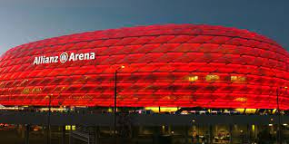

FK Bajern Minhen ( nem . Fußball-Club Baiern Munchen eV ) je nemački sportski klub sa sedištem u Minhenu , Bavarska . Najpoznatiji je po svom profesionalnom fudbalskom klubu, koji je najuspešniji tim u nemačkom fudbalu , koji je osvojio 32 titule šampiona Nemačke (od toga deset uzastopno od 2013. do 2022.) i 20 kupova .
Osnovan 1900. godine u Minhenu , tim se sastojao od 11 igrača na čelu sa Francom Džonom . Iako su 1932. osvojili titulu Nemačke, klub nije bio uključen u novoformiranu Bundesligu 1963. Najuspešniji period Bajern je imao sredinom 1970-ih, kada je pod kapitenom Franca Bekenbauera tri puta uzastopno osvojio Kup evropskih šampiona (1974-1976). Klub je igrao u 11 finala Kupa evropskih šampiona / Lige šampiona. Poslednji put 2020. godine u Lisabonu , kada je savladao Pari Sen Žermen . Pored šest evropskih klupskih titula, Bajern je osvojio Kup UEFA , Kup pobednika kupova , UEFA Superkup , FIFA Svetsko klupsko prvenstvo i dva Interkontinentalna kupa , što ga čini jednim od najuspešnijih fudbalskih klubova ikada. Budući da se Bundesliga igra u današnjem formatu, Bajern je najdominantniji klub u Nemačkoj sa rekordnih 30 titula. Bajern je najpoznatiji klub u Nemačkoj, sa više od 270.000 članova . Postoji više od 4.000 klubova navijača, sa 314.000 članova.
Bajern je igrao domaće utakmice na Olimpijskom stadionu 33 godine, ali se 2005. preselio na novi stadion pod nazivom Alijanc arena . Alijanc arena je bila ofarbana u crveno tokom Bajernovih utakmica. Alijanc arena je fudbalski stadion na severu Minhena , u okrugu Frotmaning . Nakon otvaranja 30. maja 2005. u prijateljskoj utakmici između TSV 1860 Minhen i 1. FK Nirnberg , stadion je bio domaćin ceremonije otvaranja Svetskog prvenstva 2006. godine. Stadion ima kapacitet od 70.000 gledalaca. Spoljni deo se sastoji od 1056 ploča u obliku dijamanta. Svaki od njih daje odraz u tri boje (crvena, plava ili bela). Veliki finansijski sluga, Alijanc , kupio je prava na ime stadiona u narednih 30 godina. 
| Ime | Prezime | Datum rođenja | Mesto rođenja | Prvi klub | Broj nastupa | Broj golova | Broj asistencija |
|---|---|---|---|---|---|---|---|
| Robert | Lewandowski | 21.8.1988 | Warsava | Partyzant Leszno | 253 | 238 | 30 |
| Thomas | Muller | 13.9.1988 | Vajhajm | Пехл | 371 | 128 | 87 |
| Franz | Beckenbauer | 11.8.1945 | Munich | SC München von 1906 | 427 | 60 | 23 |
| Bastian | Schweinsteiger | 1.7.1984 | Kolbermoor | FV Oberaudorf | 342 | 45 | 56 |